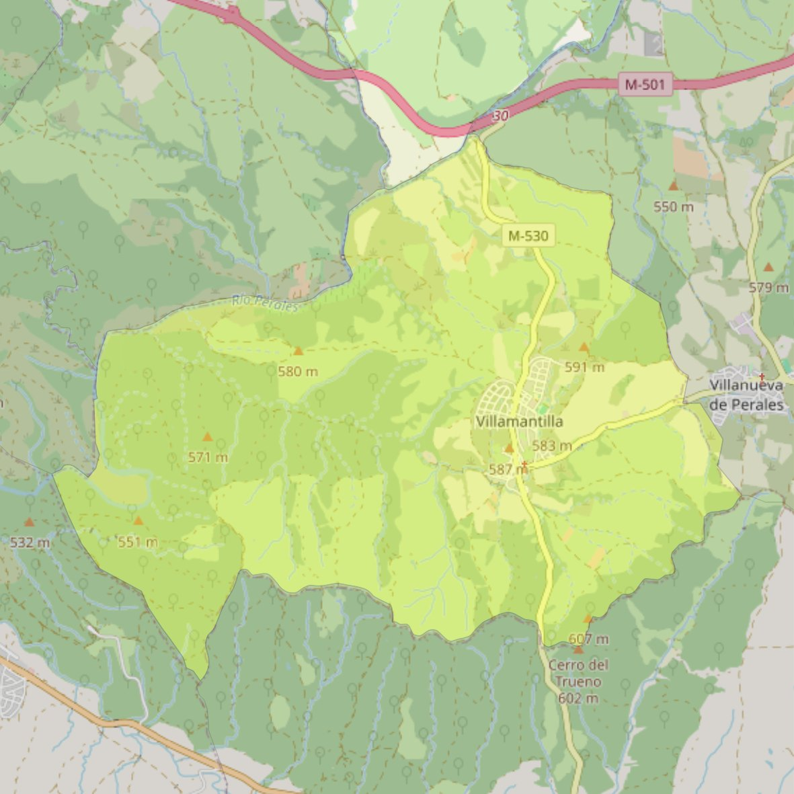

San Miguel Arcángel

- Arciprestazgo
- Navalcarnero
- Población
- Villamantilla
- Dirección postal
- c/ Antonino Rofazza, 15
- Código postal
- 28609
- Extensión
- 23,92 km² (2.392 ha)
- Teléfono
- 918 137 406
- Correo electrónico
- santacatalina-villamanta@diocesisgetafe.es